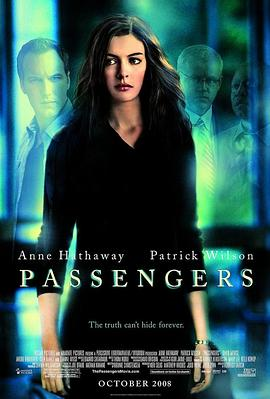

乘客 / Passengers
又名：幽灵乘客(港) / 灵异航班(台) / 危险飞行 / 空难乘客
第一遍没看懂，看了评论才知道说的是死后世界。。。剧情瞬间变深刻，我死后也想去到这样的世界 //安妮海瑟薇还演过这
作品信息
| 导演 | 罗德里戈·加西亚 |
| 编剧 | 龙尼·克里斯滕森 |
| 主演 | 安妮·海瑟薇 / 帕特里克·威尔森 / 克里·杜瓦尔 / 大卫·摩斯 / 黛安·韦斯特 / 安德鲁·布劳尔 |
| 类型 | 剧情 / 爱情 / 悬疑 / 惊悚 |
| 制片国家/地区 | 美国 / 加拿大 |
| 语言 | 英语 |
| 上映日期 | 2008-10-24(美国) |
| 片长 | 93 分钟 |
| IMDb | tt0449487 |
说过什么
2025-06-21 06:25:22
看过 · 时间来自广播，短评来自标记页
第一遍没看懂，看了评论才知道说的是死后世界。。。剧情瞬间变深刻，我死后也想去到这样的世界 //安妮海瑟薇还演过这
2025-06-15 15:24:45
广播 · 想看
安妮海瑟薇还演过这
最后一次看到是 2026-08-01T11:04:04+10:00 · 豆瓣原页